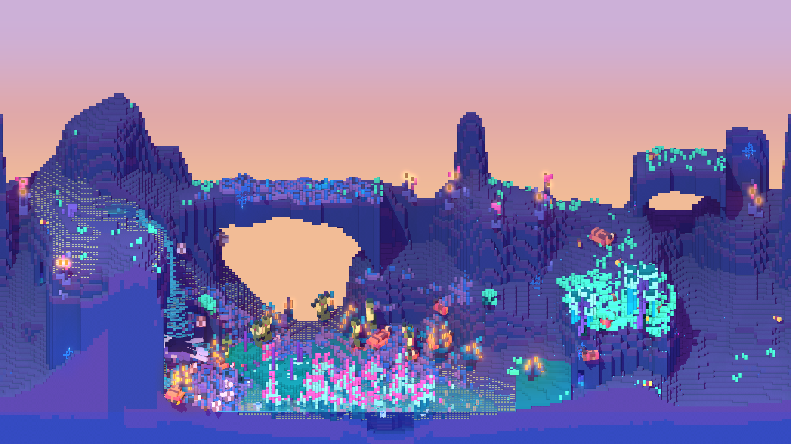

<!doctype html>
<html lang="en">
<head>
<meta charset="utf-8">
<meta name="viewport" content="width=device-width,initial-scale=1">
<title>Cubarium UI round 4: settings controls</title>
<link rel="stylesheet" href="https://use.typekit.net/ctc3iah.css">
<link rel="preconnect" href="https://fonts.googleapis.com">
<link rel="preconnect" href="https://fonts.gstatic.com" crossorigin>
<link rel="stylesheet" href="https://fonts.googleapis.com/css2?family=Pixelify+Sans:wght@400..700&display=block">
<style>
/* ---------- page chrome: not part of the proposal ---------- */
html,body{margin:0;background:#101014;color:#d8d8e0;font:14px/1.4 system-ui,sans-serif}
body{display:flex;align-items:flex-start}
.bar{position:sticky;top:0;flex:none;width:340px;height:100vh;overflow:auto;box-sizing:border-box;display:flex;flex-direction:column;gap:16px;padding:16px 18px 28px;background:#16161c;border-right:1px solid #2a2a34}
.bar h1{font-size:15px;margin:0;font-weight:600;color:#fff}
.ctl{display:flex;flex-direction:column;gap:6px;color:#8a8a99}
.seg{display:flex;flex-wrap:wrap;gap:2px;background:#22222b;border-radius:8px;padding:2px}
.seg button{all:unset;cursor:pointer;padding:5px 10px;border-radius:6px;color:#b8b8c6}
.seg button.on{background:#3a3a48;color:#fff}
.legend{color:#8a8a99;font-size:12px}
main.page{flex:1;min-width:0;padding:24px 28px 60px;display:flex;flex-direction:column;gap:40px}
h2{margin:0;color:#fff;font-size:17px;font-weight:600}
.sub{color:#8a8a99;margin-top:2px;max-width:1100px}
.grid{display:grid;grid-template-columns:1fr;gap:30px;margin-top:18px}
.opt{display:flex;flex-direction:column;gap:12px;cursor:pointer}
.opt .hd{display:flex;gap:10px;align-items:baseline}
.opt .hd b{color:#fff;font-size:14px}
.opt .hd span{color:#8a8a99;font-size:12px}
.opt.chosen .hd b::after{content:'  ✓ chosen';color:#9a9aff;font-weight:400}
.opt .stage{padding:14px;border-radius:6px;box-shadow:0 0 0 1px #2a2a34}
.opt.chosen .stage{box-shadow:0 0 0 2px #9a9aff}
.cap{color:#8a8a99;font:12px system-ui,sans-serif;width:110px;flex:none;letter-spacing:0;text-transform:none}
.frame{position:relative;overflow:hidden;border-radius:6px;box-shadow:0 0 0 1px #2a2a34;background:#0B0525}
.frame>.screen{transform-origin:0 0;position:absolute;left:0;top:0}

/* ---------- decided in rounds 2 and 3 ---------- */
.neon{--ink:#F7F0FF;--ink2:#DCD1F7;--accent:#42C5F8;--hot:#F25BDB;--warm:#FDA243;--line:rgba(176,55,196,.32);--panel:#C23FD3;
  --lab:#A595D8;--tab:#E6DEFF;--kick:#F25BDB;--tabs-bg:rgba(11,5,37,.88);
  --lf:'gridlite-pe-variable',monospace;--lfv:'wght' 691,'BACK' 135,'RECT' 71,'ELSH' 2.65;--neg:'wght' 1,'BACK' 700,'RECT' 700,'ELSH' 2.65;
  --sec:'wght' 691,'BACK' 320,'RECT' 220,'ELSH' 2.65;
  --hf:'gridlite-pe-variable',sans-serif;--hfv:'wght' 700,'BACK' 90,'RECT' 120,'ELSH' 3.5;
  --tf:'Pixelify Sans',sans-serif;--t1:23px;--t2:21px;--t3:18px;
  color:var(--ink);font-family:var(--tf);font-variation-settings:'wght' 400;font-synthesis:none}
.neon *{box-sizing:border-box}
.lt{font-family:var(--lf);font-variation-settings:var(--lfv);font-size:26px;letter-spacing:2px;text-transform:uppercase;line-height:1.15;font-weight:400}
.lbl{color:var(--lab)}
.kick{color:var(--kick)}
.fill-dither{background-color:#1D0D50;background-size:100% 100%;image-rendering:pixelated}
.btn{position:relative;top:0;white-space:nowrap;display:inline-flex;align-items:center;gap:12px;height:54px;padding:0 26px 0 14px;border:none;background:transparent;color:var(--ink2);cursor:pointer}
.btn.primary{color:#FFD6F6}
.btn.primary .bl{font-variation-settings:var(--neg);letter-spacing:0}
.btn.secondary .bl{font-variation-settings:var(--sec);letter-spacing:0}
.key{position:relative;display:inline-flex;align-items:center;justify-content:center;height:38px;letter-spacing:0;text-transform:none;font-variation-settings:var(--neg)}
.chip{position:relative;display:inline-flex;align-items:center;gap:8px;min-height:40px;padding:4px 14px;font-size:var(--t2);color:var(--ink2)}
.row{position:relative;display:flex;align-items:center;gap:14px;height:44px;padding:0 16px;font-size:var(--t2);color:var(--ink2);white-space:nowrap}
.off{opacity:.4}
.note{font-size:var(--t3);color:var(--lab)}

/* ---------- sheet samples ---------- */
.ctlpanel{position:relative;padding:30px 34px;display:flex;flex-direction:column;gap:30px;margin:6px}
.srow{display:flex;flex-wrap:wrap;align-items:center;gap:22px 34px}
.srow .cap{color:#b3a9d6}

/* ---------- the new controls ---------- */
.box{position:relative;background:rgba(11,5,37,.5)}
.vl{font-size:var(--t2);color:var(--ink)}
.ar{display:flex;color:var(--lab)}
.focus .ar{color:var(--accent)}

/* choice: arrows */
.cyc{position:relative;display:flex;align-items:center;width:420px;height:60px;padding:0 16px}
.cyc .vl{flex:1;text-align:center;padding-bottom:12px}
.pips{position:absolute;left:0;right:0;bottom:10px;display:flex;justify-content:center;gap:6px}
.pips i{width:6px;height:6px;background:rgba(165,149,216,.3)}
.pips i.on{background:var(--hot)}
/* choice: dropdown */
.dwrap{position:relative;display:inline-block;vertical-align:top}
.drop{position:relative;display:flex;align-items:center;gap:12px;width:420px;height:52px;padding:0 16px}
.drop .vl{flex:1}
.dlist{position:absolute;left:0;top:64px;width:420px;z-index:5;padding:9px 0}
.dlist .row.sel{color:#fff}
/* choice: all shown */
.chs{display:flex;flex-wrap:wrap;gap:10px;max-width:640px}

/* steps: segments (also the two-way toggle) */
.sg{position:relative;display:inline-flex;align-items:stretch;height:52px}
.sgc{display:flex;align-items:center;padding:0 22px;color:var(--tab)}
.sgc+.sgc{background:repeating-linear-gradient(180deg,var(--line) 0 3px,transparent 3px 6px) left/3px 100% no-repeat}
.sgc.on{color:var(--hot);font-variation-settings:var(--neg);letter-spacing:0;padding:0 16px}
/* steps: dot slider */
.sl{position:relative;width:420px;padding:4px 0 0}
.trk{position:relative;height:36px;display:flex;align-items:center;gap:3px}
.trk i{width:6px;height:6px;flex:none;background:rgba(165,149,216,.25)}
.trk i.on{background:var(--accent)}
.knob{position:absolute;top:0;width:12px;height:36px}
.tks{display:flex;justify-content:space-between;margin-top:8px}
.tks span{color:var(--lab);font-size:26px}
.tks span.on{color:var(--ink)}

/* toggle: checkbox */
.cbw{position:relative;display:inline-flex;align-items:center;gap:16px;height:52px;padding:0 12px 0 9px}
.cb{position:relative;width:33px;height:33px;flex:none;display:flex;align-items:center;justify-content:center}
.cbt{font-size:var(--t2);color:var(--ink2)}
/* toggle: lamp */
.lamp{position:relative;display:inline-flex;align-items:center;height:52px;padding:0 8px;gap:18px}
.lamp .lw{color:var(--lab);font-variation-settings:var(--sec);letter-spacing:0}
.lamp.on .lw{color:var(--hot);font-variation-settings:var(--neg)}

/* progress */
.pg{display:flex;align-items:center;gap:18px}
.pg .pct{color:var(--ink2);min-width:78px;text-align:right}
.pd{display:flex;gap:3px}
.pd i{width:6px;height:6px;flex:none;background:rgba(165,149,216,.22)}
.pd i.on{background:var(--accent)}
.pd i.edge{background:#fff}
.pd.sm{gap:3px}.pd.sm i{width:3px;height:3px}
.pb{position:relative;height:21px}
.pb>b{position:absolute;left:0;top:0;bottom:0;background:repeating-linear-gradient(90deg,var(--accent) 0 6px,rgba(66,197,248,.45) 6px 9px)}
.pb>b::after{content:'';position:absolute;right:0;top:0;bottom:0;width:3px;background:#fff}
.pb.sm{height:9px}
.pk{display:flex;gap:3px}
.pk i{width:18px;height:27px;flex:none;background:rgba(165,149,216,.16)}
.pk i.on{background:var(--accent)}
.pk.sm i{width:9px;height:12px}

/* ---------- forms and screens ---------- */
.form{display:flex;flex-direction:column;gap:28px}
.field{display:grid;grid-template-columns:200px auto;align-items:center;column-gap:24px;justify-content:start}
.field>.note{grid-column:2;margin-top:8px;max-width:520px}
.tf{position:relative;display:flex;align-items:center;width:420px;height:52px;padding:0 16px;font-size:var(--t2);color:var(--lab)}
.screen{position:relative;width:1920px;height:1080px;overflow:hidden;background:#0B0525}
.world{position:absolute;inset:0;width:100%;height:100%;object-fit:cover;image-rendering:pixelated}
.scrim{position:absolute;inset:0;background:repeating-conic-gradient(rgba(7,4,26,.88) 0 25%,rgba(7,4,26,.62) 0 50%) 0 0/6px 6px}
.body{position:absolute;left:96px;top:96px;width:1728px;height:880px;display:flex;flex-direction:column;padding:48px 56px 28px}
.head{display:flex;flex-direction:column;gap:10px;margin-bottom:34px}
.ptitle{font-family:var(--hf);font-variation-settings:var(--hfv);font-size:52px;line-height:1;color:var(--ink);text-shadow:4px 4px 0 #5A1D9D}
.cols{flex:1;display:flex;gap:64px;min-height:0}
.cols>.left{width:760px;flex:none}
.cols>.right{flex:1;display:flex;flex-direction:column;gap:18px;padding-left:56px;background:repeating-linear-gradient(180deg,var(--line) 0 3px,transparent 3px 6px) left/3px 100% no-repeat}
.cards{display:grid;grid-template-columns:repeat(2,360px);gap:28px 30px}
.card{position:relative;display:flex;flex-direction:column;gap:10px;padding:12px}
.thumb{width:336px;height:168px;background-image:url(../round1/assets/world.png);background-size:1920px auto;image-rendering:pixelated}
.card .cl{display:flex;justify-content:space-between;align-items:center;font-size:var(--t3);color:var(--ink2)}
.card.drawing .thumb{opacity:.35}
.founding{display:flex;flex-direction:column;gap:18px;margin-top:6px}
.founding .phase{font-size:var(--t1);color:var(--ink)}
.actions{display:flex;gap:20px;padding:18px 0 0 12px;margin-top:auto}
.hints{position:absolute;left:96px;right:96px;bottom:34px;display:flex;justify-content:flex-end;gap:36px;color:var(--ink2)}
.hints>span{display:inline-flex;align-items:center;gap:10px}
</style>
</head>
<body>
<aside class="bar">
  <h1>Cubarium UI · round 4 · settings controls</h1>
  <div class="ctl">Show <div class="seg" data-k="view"><button data-v="sheet">All options</button><button data-v="newworld">New world</button><button data-v="founding">Founding</button><button data-v="settings">Settings</button></div></div>
  <div class="ctl">Choice from a list <div class="seg" data-k="choice"></div></div>
  <div class="ctl">Steps (Low / Medium / High) <div class="seg" data-k="steps"></div></div>
  <div class="ctl">On / off <div class="seg" data-k="toggle"></div></div>
  <div class="ctl">Progress <div class="seg" data-k="progress"></div></div>
  <div class="legend">The four controls the New world and Settings screens need, in round 3's look (notched lines, dithered bands, lit dots, glow focus, Gridlite chrome, Pixelify 23 px). Each section shows every option with its states; click one to choose it. The three screen views put your current mix on the real screens; their content follows what those screens do today. Hover still equals focus. Choices stay in this browser.</div>
</aside>
<main class="page" id="page"></main>
<script>
const OPTS={
  choice:[['cycle','Arrows','The value between two pixel arrows; left and right on the pad (or a click on an arrow) step through. A pip per option shows where you are.'],
    ['drop','Dropdown','A box with the value and a down arrow; A opens a list under it in the list-row style, B closes it.'],
    ['chips','All shown','Every option as a chip, the chosen one lit. No opening or stepping, but a long list takes room.']],
  steps:[['seg','Segments','The three steps side by side in one box; the chosen one is a lit plate like the selected tab.'],
    ['slider','Dot slider','A track of dots that light up to a handle, with the three stops named under it.'],
    ['cycle','Arrows','The same arrows as the choice control: ‹ Medium ›.']],
  toggle:[['switch','Two-way','Off and On side by side, the current one lit, like the segments.'],
    ['box','Checkbox','A small notched box that fills with lit dots and a tick, with its text beside it.'],
    ['lamp','Lamp','One word: ON as a lit plate, OFF as an unlit one, like the main and second buttons.']],
  progress:[['dots','Dot row','A row of small square dots that light up; the newest dot is white.'],
    ['bar','Bar','A notched bar filling with cyan, in 6 px steps, with a white leading edge.'],
    ['blocks','Blocks','Twenty chunky blocks, retro-loader style.']]};
const SIZES=['Terrarium','Deep 1.5×','Deep 2×','Wide'];
const TERRAINS=['Terrarium','Small terrarium','Staged ring, small','Staged ring, terraced','Staged ring, wide'];
const WATER=['Low','Medium','High'];
const D='·';

let st={view:'sheet',choice:'cycle',steps:'seg',toggle:'switch',progress:'dots'};
const KEY='cub-ui-r4';
try{Object.assign(st,JSON.parse(localStorage.getItem(KEY)||'{}'));}catch(e){}
function save(){if(document.body.classList.contains('shot'))return;try{localStorage.setItem(KEY,JSON.stringify(st));}catch(e){}}

// ---------- rules written with helpers (round 3's) ----------
const R=c=>`0 -3px 0 0 ${c},0 3px 0 0 ${c},-3px 0 0 0 ${c},3px 0 0 0 ${c}`;
const DOTS=(c,p)=>`conic-gradient(from 270deg at 2px 2px,${c} 0 25%,transparent 0) 0 0/${p}px ${p}px`;
const RULES=`
.fr{box-shadow:${R('var(--line)')}}
.fr.main{box-shadow:${R('var(--panel)')},0 0 48px rgba(176,55,196,.30)}
.fr.pop{box-shadow:${R('var(--panel)')},0 0 32px rgba(176,55,196,.40)}
.focus::after{content:'';position:absolute;inset:-6px;pointer-events:none;box-shadow:${R('var(--accent)')},0 0 18px 2px rgba(66,197,248,.55)}
.row.sel{color:#fff;background:${DOTS('rgba(242,91,219,.32)',4)};box-shadow:inset 6px 0 0 0 #F25BDB}
.row.focus::after{inset:-3px}
.chip{background:${DOTS('rgba(194,63,211,.30)',4)}}
.chip.on{color:#fff;background:${DOTS('rgba(242,91,219,.65)',4)}}
.btn.secondary{box-shadow:${R('rgba(165,149,216,.35)')}}
.cb{box-shadow:${R('var(--line)')};background:rgba(11,5,37,.5)}
.cb.on{box-shadow:${R('var(--hot)')};background:${DOTS('rgba(242,91,219,.65)',4)}}
.knob{background:${DOTS('#FFD6F6',3)};box-shadow:${R('var(--hot)')}}
.pb{box-shadow:${R('var(--line)')};background:rgba(11,5,37,.5)}
`;
const ruleTag=document.createElement('style');ruleTag.textContent=RULES;document.head.appendChild(ruleTag);

// ---------- dithered bands (round 3) ----------
const BANDS=[['#2A1470',.18],['#24115F',.36],['#1D0D50',.56],['#160A41',.76],['#100632',1]];
const BAYER=[0,8,2,10,12,4,14,6,3,11,1,9,15,7,13,5].map(v=>(v+.5)/16);
const ditherCache={};
function ditherURL(w,h){
  const cw=Math.max(1,Math.round(w/3)),ch=Math.max(1,Math.round(h/3)),k=cw+'x'+ch;
  if(ditherCache[k])return ditherCache[k];
  const c=document.createElement('canvas');c.width=cw;c.height=ch;const g=c.getContext('2d');
  const rgb=BANDS.map(([hex])=>[1,3,5].map(i=>parseInt(hex.slice(i,i+2),16)));
  const img=g.createImageData(cw,ch);const z=5;
  for(let y=0;y<ch;y++){
    let b=BANDS.findIndex(([,e])=>(y+.5)/ch<e);if(b<0)b=BANDS.length-1;
    for(let x=0;x<cw;x++){
      let col=b;
      const eb=Math.round(BANDS[b][1]*ch),ea=b>0?Math.round(BANDS[b-1][1]*ch):-1e9;
      const th=BAYER[(y%4)*4+(x%4)];
      if(b<BANDS.length-1&&eb-y<=z){const t=(z-(eb-y)+.5)/(2*z);if(t>th)col=b+1;}
      if(b>0&&y-ea<z){const t=(z-(y-ea)-.5)/(2*z);if(t>th)col=b-1;}
      const o=(y*cw+x)*4;img.data[o]=rgb[col][0];img.data[o+1]=rgb[col][1];img.data[o+2]=rgb[col][2];img.data[o+3]=255;
    }
  }
  g.putImageData(img,0,0);
  return ditherCache[k]=`url(${c.toDataURL()})`;
}
function paintDither(){document.querySelectorAll('.fill-dither').forEach(el=>{el.style.backgroundImage=ditherURL(el.offsetWidth,el.offsetHeight);});}

// ---------- pixel glyphs ----------
const px=(w,h,cells,s=4)=>`<svg width="${w*s}" height="${h*s}" viewBox="0 0 ${w} ${h}" shape-rendering="crispEdges" fill="currentColor">${cells.map(([x,y])=>`<rect x="${x}" y="${y}" width="1" height="1"/>`).join('')}</svg>`;
const CHR=px(3,5,[[0,0],[1,1],[2,2],[1,3],[0,4]]);
const CHL=px(3,5,[[2,0],[1,1],[0,2],[1,3],[2,4]]);
const CHD=px(5,3,[[0,0],[1,1],[2,2],[3,1],[4,0]]);
const TICK=`<span style="color:#fff;display:flex">${px(7,6,[[6,0],[5,1],[4,2],[0,2],[1,3],[3,3],[2,4]],3)}</span>`;

// ---------- markup pieces ----------
const pl='<span class="pl"> </span>';
const lit=t=>`&nbsp;${t}&nbsp;`;
const key=t=>`<span class="key lt">${lit(t)}</span>`;
const btn=(kind,label,k,state='')=>`<button class="btn ${kind} lt ${state}" type="button">${key(k)}<span class="bl">${lit(label)}</span></button>`;
const field=(label,ctl,note='')=>`<div class="field"><span class="lt lbl">${label}</span><div>${ctl}</div>${note?`<div class="note">${note}</div>`:''}</div>`;

// choice
function choice(opts,cur,state='',open=false){
  const v=opts[cur];
  if(st.choice==='cycle')return `<div class="cyc box fr ${state}"><span class="ar">${CHL}</span><span class="vl">${v}</span><span class="ar">${CHR}</span><span class="pips">${opts.map((_,i)=>`<i class="${i===cur?'on':''}"></i>`).join('')}</span></div>`;
  if(st.choice==='drop')return `<div class="dwrap"><div class="drop box fr ${state}"><span class="vl">${v}</span><span class="ar">${CHD}</span></div>${open?`<div class="dlist fr pop fill-dither">${opts.map((o,i)=>`<div class="row${i===cur?' sel':''}${i===cur+1?' focus':''}">${o}</div>`).join('')}</div>`:''}</div>`;
  return `<div class="chs ${state==='off'?'off':''}">${opts.map((o,i)=>`<span class="chip${i===cur?' on':''}${state==='focus'&&i===cur?' focus':''}">${o}</span>`).join('')}</div>`;
}
// steps
function steps(opts,cur,state=''){
  if(st.steps==='seg')return `<div class="sg box fr ${state}">${opts.map((o,i)=>`<span class="sgc lt${i===cur?' on':''}">${i===cur?lit(o):o}</span>`).join('')}</div>`;
  if(st.steps==='slider'){
    const n=47,at=Math.round(cur/(opts.length-1)*(n-1));
    return `<div class="sl ${state}"><div class="trk">${Array.from({length:n},(_,i)=>`<i class="${i<=at?'on':''}"></i>`).join('')}<span class="knob" style="left:${at*9-3}px"></span></div><div class="tks">${opts.map((o,i)=>`<span class="lt${i===cur?' on':''}">${o}</span>`).join('')}</div></div>`;
  }
  const save=st.choice;st.choice='cycle';const out=choice(opts,cur,state);st.choice=save;return out;
}
// toggle
function toggle(on,text,state=''){
  if(st.toggle==='switch'){const s=st.steps;st.steps='seg';const o=steps(['Off','On'],on?1:0,state);st.steps=s;return o;}
  if(st.toggle==='box')return `<span class="cbw ${state}"><span class="cb${on?' on':''}">${on?TICK:''}</span><span class="cbt">${text}</span></span>`;
  return `<span class="lamp lt${on?' on':''} ${state}"><span class="lw">${lit(on?'On':'Off')}</span></span>`;
}
// progress
function progress(p,small=false){
  const w=small?312:420;
  let bar;
  if(st.progress==='dots'){const sz=small?6:9,n=Math.floor((w+3)/sz),k=Math.round(p*n);
    bar=`<div class="pd${small?' sm':''}">${Array.from({length:n},(_,i)=>`<i class="${i<k-1?'on':i===k-1?'edge':''}"></i>`).join('')}</div>`;}
  else if(st.progress==='bar'){bar=`<div class="pb${small?' sm':''}" style="width:${w}px"><b style="width:${Math.round(p*w/3)*3}px"></b></div>`;}
  else{const n=small?24:20,k=Math.round(p*n);bar=`<div class="pk${small?' sm':''}">${Array.from({length:n},(_,i)=>`<i class="${i<k?'on':''}"></i>`).join('')}</div>`;}
  return small?bar:`<div class="pg">${bar}<span class="pct lt">${Math.round(p*100)}%</span></div>`;
}

// ---------- sheet ----------
function panel(inner){return `<div class="neon"><div class="ctlpanel fr main fill-dither">${inner}</div></div>`;}
function sample(k,v){
  const was=st[k];st[k]=v;let h;
  if(k==='choice'&&v==='chips')h=`<div class="srow"><span class="cap">Normal</span>${choice(TERRAINS,3)}</div><div class="srow"><span class="cap">Focus</span>${choice(TERRAINS,3,'focus')}</div><div class="srow"><span class="cap">Disabled</span>${choice(TERRAINS,3,'off')}</div>`;
  else if(k==='choice')h=`<div class="srow"><span class="cap">Normal</span>${choice(TERRAINS,3)}<span class="cap">Focus</span>${choice(TERRAINS,3,'focus')}</div>
    <div class="srow" style="${v==='drop'?'min-height:330px;align-items:flex-start':''}"><span class="cap">${v==='drop'?'Open (Terrarium focused)':'Disabled'}</span>${v==='drop'?choice(TERRAINS,3,'',true):choice(TERRAINS,3,'off')}${v==='drop'?`<span class="cap">Disabled</span>${choice(TERRAINS,3,'off')}`:''}</div>`;
  if(k==='steps')h=`<div class="srow"><span class="cap">Normal</span>${steps(WATER,1)}<span class="cap">Focus</span>${steps(WATER,2,'focus')}</div>
    <div class="srow"><span class="cap">Disabled</span>${steps(WATER,0,'off')}<span class="cap">Two steps (movement)</span>${steps(['Smooth','Stepped'],0)}</div>`;
  if(k==='toggle')h=`<div class="srow"><span class="cap">Off</span>${toggle(false,'Glide between pixels')}<span class="cap">On</span>${toggle(true,'Glide between pixels')}</div>
    <div class="srow"><span class="cap">On, focus</span>${toggle(true,'Glide between pixels','focus')}<span class="cap">Disabled</span>${toggle(true,'Glide between pixels','off')}</div>`;
  if(k==='progress')h=`<div class="srow"><span class="cap">Founding</span>${progress(.06)}</div><div class="srow"><span class="cap"></span>${progress(.38)}</div><div class="srow"><span class="cap"></span>${progress(.81)}</div>
    <div class="srow"><span class="cap">Card (small)</span>${progress(.55,true)}</div>`;
  st[k]=was;return panel(h);
}
function optBlock(k,[v,name,desc]){
  return `<div class="opt${st[k]===v?' chosen':''}" data-k="${k}" data-v="${v}"><div class="hd"><b>${name}</b><span>${desc}</span></div><div class="stage">${sample(k,v)}</div></div>`;
}
function sheet(){
  const sec=(k,title,sub)=>`<section><h2>${title}</h2><div class="sub">${sub}</div><div class="grid">${OPTS[k].map(o=>optBlock(k,o)).join('')}</div></section>`;
  return sec('choice','Choice from a list','World size, terrain preset and climate on the New world screen; later any setting with named options.')+
    sec('steps','Steps','Water (Low / Medium / High) on New world; Smooth / Stepped movement in Settings uses the same control with two steps.')+
    sec('toggle','On / off','Subpixel placement in Settings.')+
    sec('progress','Progress','Founding a world (large) and drawing each terrain candidate (small, on its card).');
}

// ---------- screens ----------
const shell=(head,inner,hints)=>`<div class="screen neon"><div class="scrim"></div>
  <main class="body fr main fill-dither">${head}${inner}</main><footer class="hints lt">${hints}</footer></div>`;
const head=(kick,title)=>`<div class="head"><div class="kick lt">${kick}</div><div class="ptitle">${title}</div></div>`;
function worldForm(focus,dis=''){
  return `<div class="form ${dis}">
    ${field('Size',choice(SIZES,0),'256 × 128 × 48 cells, the standard terrarium.')}
    ${field('Terrain',choice(TERRAINS,3,focus==='terrain'?'focus':''),'A ring of terraces stepping down to a central lake.')}
    ${field('Climate',choice(['Tropical jungle'],0),'')}
    ${field('Water',steps(WATER,1),'Water table at 0.75 m.')}
    ${field('Seed',`<span class="tf box fr">Random</span>`,'')}
  </div>`;
}
function newWorld(){
  const card=(i,pos,stt,p)=>`<div class="card fr${stt==='focus'?' focus':''}${stt==='drawing'?' drawing':''}"><div class="thumb" style="background-position:${pos}"></div>
    <div class="cl"><span>Terrain ${i}</span><span class="lt lbl">${stt==='drawing'?'Drawing':'Ready'}</span></div>${stt==='drawing'?progress(p,true):''}</div>`;
  return shell(head('World','New world'),`<div class="cols"><div class="left">${worldForm('terrain')}</div>
    <div class="right"><div class="lt lbl">Terrains</div><div class="cards">${card(1,'-200px -560px')}${card(3,'-900px -610px','focus')}${card(5,'-1300px -520px')}${card(7,'-500px -700px','drawing',.55)}</div>
    <div class="actions">${btn('primary','Found this world','A')}${btn('secondary','Reroll','X')}</div></div></div>`,
    `<span>${key('Y')}Open large</span><span>${key('A')}Found</span><span>${key('X')}Reroll</span><span>${key('B')}Back</span>`);
}
function founding(){
  return shell(head('World','New world'),`<div class="cols"><div class="left">${worldForm('','off')}</div>
    <div class="right"><div class="lt lbl">Founding terrain 3</div>
    <div class="founding"><div class="phase">Placing animals</div>${progress(.62)}<div class="note">Frondgrazers placed, 6 of 8. Then the littershredders and the hunters.</div></div>
    <div class="actions">${btn('secondary','Cancel','B','focus')}</div></div></div>`,
    `<span>${key('B')}Cancel</span>`);
}
function settings(){
  return shell(head('Settings','Animals'),`<div class="cols"><div class="left" style="width:1000px"><div class="form">
    ${field('Movement',steps(['Smooth','Stepped'],0),'Smooth: they glide between ticks. Stepped: they hop a voxel at a time and turn in steps, like the old stamped animals.')}
    ${field('Subpixel',toggle(true,'Glide between pixels','focus'),'Smooth movement only. On, they glide between pixels; off, they land on whole pixels.')}
    </div></div></div>`,
    `<span>${key('A')}Change</span><span>${key('B')}Back</span>`);
}

function render(){
  save();
  const page=document.getElementById('page');
  if(st.view==='sheet'){
    page.innerHTML=sheet();
    page.querySelectorAll('.opt').forEach(el=>el.onclick=()=>{st[el.dataset.k]=el.dataset.v;sync();render();});
  }else{
    const f={newworld:newWorld,founding:founding,settings:settings}[st.view];
    const name=k=>OPTS[k].find(o=>o[0]===st[k])[1];
    const hd=document.body.classList.contains('shot')?'':`<div><h2>${name('choice')} · ${name('steps')} steps · ${name('toggle')} toggle · ${name('progress')} progress</h2><div class="sub">Sample content follows what the screen shows today.</div></div>`;
    page.innerHTML=hd+`<div><div class="frame">${f()}</div></div>`;
  }
  fit();paintDither();
}
function fit(){
  document.querySelectorAll('.frame').forEach(fr=>{
    const w=document.body.classList.contains('shot')?1920:Math.min(1920,fr.parentElement.clientWidth);
    fr.style.width=w+'px';const s=w/1920;fr.style.height=(1080*s)+'px';
    fr.firstElementChild.style.transform=`scale(${s})`;
  });
}
function sync(){
  document.querySelectorAll('.seg[data-k]').forEach(s=>s.querySelectorAll('button').forEach(b=>b.classList.toggle('on',b.dataset.v===st[s.dataset.k])));
}
for(const k of Object.keys(OPTS))document.querySelector(`.seg[data-k="${k}"]`).innerHTML=OPTS[k].map(([v,n])=>`<button data-v="${v}">${n}</button>`).join('');
document.querySelectorAll('.seg[data-k] button').forEach(b=>b.onclick=()=>{st[b.parentElement.dataset.k]=b.dataset.v;sync();render();});
// #shot&view=newworld&state={json} renders at 1:1 for checks
const hp=new URLSearchParams(location.hash.slice(1));
if(hp.has('shot')){document.body.classList.add('shot');document.querySelector('.bar').style.display='none';document.getElementById('page').style.padding='0';
  st.view=hp.get('view')||'newworld';if(hp.get('state'))Object.assign(st,JSON.parse(hp.get('state')));}
window.addEventListener('resize',()=>{fit();});
sync();
document.fonts.ready.then(()=>{render();});
render();
</script>
</body>
</html>
